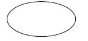
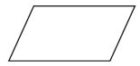
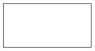
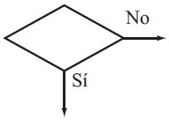
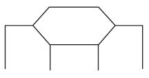
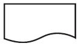
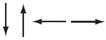
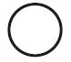
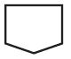
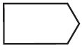

El proceso de resolución de un problema mediante una computadora abarca desde la descripción inicial del problema hasta el desarrollo de un programa de computadora que lo resuelva.
En la siguiente figura se resume las etapas que debemos seguir para solucionar algún problema:
El proceso de diseño de un programa tiene una serie de etapas que generalmente deben seguir todos los programadores:
La definición del problema comienza analizando los requisitos del usuario; estos requisitos con frecuencia suelen ser imprecisos y difíciles de escribir. Por esta razón en este etapa de especificación se requiere normalmente una gran comunicación entre los programadores y los futuros usuarios finales.
En esta etapa también tenemos que especificar claramente aquella información que es necesaria para
la resolución del problema. Para hacer el análisis es de gran utilidad responder a las siguientes preguntas:
Casi inconscientemente, los humanos efectuamos cotidianamente una serie de pasos, procedimientos o acciones que nos permiten alcanzar un resultado o resolver un problema. Esta serie de pasos, procedimientos o acciones, comenzamos a aplicarlas desde que empieza el día, cuando, por ejemplo, tomar un bañar. Luego, tenemos que continuar con una serie de pasos que nos permitan alcanzar otro resultado específico: desayunar. La historia se repite innumerables veces durante el día. En realidad todo el tiempo estamos aplicando algoritmos para resolver problemas.
A estas alturas es importante definir el concepto de algoritmo. El nombre procede del matemático persa Abu Ja’far Mohammed ibn Musa al-Jowârizmî, muy conocido durante la Edad Media por sentar las bases del Álgebra.
Definición: Un algoritmo es un conjunto ordenado de pasos ejecutables que permiten obtener un resultado determinado a partir de ciertos datos de partida y que cumple las siguientes características:
En general, un algoritmo consta de tres secciones o modulos pincipales.
Durante la etapa diseño del algoritmo hay que indicar la serie de acciones para llevar a cabo la tarea solicitada o resolver el problema planteado, lo que se traduce en la construcción de un algoritmo. Los métodos más eficaces se basan en la técnica divide y vencerás:
Esta etapa de diseño es bastante larga, pero hay que tener en cuenta que el gasto de tiempo en la etapa de diseño será ahorro de tiempo cuando se escriba y depure el programa. El resultado final del diseño es una solución que debe ser fácil de traducir a estructuras de datos y estructuras de control de un lenguaje de programación específico.
Ejemplo: Escriba un algoritmo para determinar la suma de todos los números pares
entre $1$ y $1\,000$.
Análisis del problema: El problema consiste en sumar $2 + 4 + 6 + 8+ \cdots + 1\, 000$. Definiremos dos nuevas variables auxiliares para resolver el problema, Sum y Num, la variable Sum representará las sumas sucesivas $(2+4), (2+4+6), (2+4+6+8), \ldots$. Mientras que Num denotará el número par a sumar.
Ejemplo: Escriba un algoritmo para determinar si un número entero positivo $p$
es primo o no.
Datos: $p$
Donde: $p$ es un entero positivo
Análisis del problema: Recordemos que un número entero positivo es primo si tiene unicamente dos divisores: $1$ y $p$. Para resolver el problema consideremos la variable auxiliar, Divisior para representar a los divisores de $p$, tenemos que realizar divisiones sucesivas para determinar si $p$ es primo. sumar sucesivas
Observación: No existen reglas específicas que nos permitan resolver un problema. Sin embargo, es posible ofrecer un conjunto de técnicas y herramientas metodológicas que permitan flexibilizar y estructurar el razonamiento utilizado en la solución de un problema. Obteniendo finalmente la construcción de algoritmos eficientes.
Las dos herramientas más comúnmente utilizadas para diseñar algoritmos son: diagramas de flujo y pseudocódigos. De hecho, una de las mejores formas de aprender a programar es empezar por los diagramas de flujo y pseudocodigo. Ambos facilitan e inducen la resolucion de problemas mediante algoritmos
Un diagrama de flujo es la representación gráfica mediante símbolos especiales, de los pasos o procedimientos de manera secuencial y lógica que se deben realizar para solucionar un problema específico.
Los diagramas de flujo facilitan la comunicación entre los programadores y los usuarios, además de que permiten de una manera más rápida detectar los posibles errores de lógica que se presenten al implementar el algoritmo. Su correcta construcción es sumamente importante porque a partir del mismo se escribe un programa en algún lenguaje de programación. Si el diagrama de flujo está completo y correcto, el paso del mismo a un lenguaje de programación es relativamente simple y directo.
Definición: Un diagrama de flujo es una representación gráfica de un algoritmo. Los símbolos utilizados satisfacen las recomendaciones de la International Organization for Standardization (ISO) y el American National Standards Institute (ANSI).
Enseguida se muestran algunos de los principales símbolos utilizados para construir un diagrama de flujo.
| Símbolo | Descripcion del símbolo |
|---|---|
|  | Se utiliza para marcar el inicio y el fin del diagrama de flujo. |
|  | Se utiliza para introducir los datos de entrada. Expresa lectura. |
|  | Representa un proceso. En su interior se colocan asignaciones, operaciones aritméticas, cambios de valor de celdas en memoria, etc. |
|  | Se utiliza para representar una decisión. En su interior se almacena una condición, y, dependiendo del resultado, se sigue por una de las ramas o caminos alternativos. Este símbolo se utiliza con pequeñas variaciones en las estructuras selectivas |
|  | Se utiliza para representar una decisión múltiple. En su interior se almacena un selector, y, dependiendo del valor de dicho selector, se sigue por una de las ramas o caminos alternativos. |
|  | Se utiliza para representar la impresión de un resultado. Expresa escritura. |
|  | Expresan la dirección del flujo del diagrama. |
|  | Expresa conexión dentro de una misma página. |
|  | Representa conexión entre páginas diferentes. |
|  | Se utiliza para expresar un módulo de un problema, subproblema, que hay que resolver antes de continuar con el flujo normal del diagrama. |
En la siguiente figura se presentan los pasos que se deben seguir en la construcción de un diagrama de flujo. El procesamiento de los datos generalmente está relacionado con el proceso de toma de decisiones. Además, es muy común repetir un conjunto de pasos.
El diagrama de flujo debe ilustrar gráficamente los pasos o procesos que se deben seguir para alcanzar la solución de un problema.
Los símbolos presentados, colocados en los lugares adecuados, permiten crear una estructura gráfica flexible que ilustra los pasos a seguir para alcanzar un resultado específico. El diagrama de flujo facilita entonces la escritura del programa en un lenguaje de programación.
A continuación se presenta el conjunto de reglas para la construcción de diagramas de flujo:
Presentaremos a continuación algunos conceptos que son fundamentales para la construcción de algoritmos, diagramas de flujo y programas. Primero analizaremos los tipos de datos, luego estudiaremos los conceptos de identificador, constantes y variables, más adelante analizaremos las operaciones aritméticas y expresiones lógicas.
Los datos a procesar por una computadora pueden clasificarse en simples y estructurados.
Definición. Los datos simples son aquellos que ocupan sólo una casilla de memoria, por lo tanto, una variable simple hace referencia a un único valor a la vez. Dentro de este grupo de datos se encuentran: enteros, reales, caracteres y booleanos
Definición. Los datos estructurados se caracterizan por el hecho de que con un nombre (identificador de variable estructurada) se hace referencia a un grupo de casillas de memoria. Es decir, un dato estructurado tiene varios componentes. Cada uno de los componentes puede ser a su vez un dato simple o estructurado. Sin embargo, los componentes básicos (los del nivel más bajo) de cualquier tipo estructurado son datos simples. Dentro de este grupo de datos se encuentran: arreglos y las cadena de caracteres.
Dentro de los tipos de dato númerico se encuentran los enteros y los reales. Los enteros son números que pueden estar precedidos del signo $+$ o $-$ y que no tienen parte decimal. Mientras que los reales son numeros que pueden estar precedidos del signo $+$ o $-$, y que tiene una parte decimal.
Ejemplo. Los siguientes son ejemplos de datos de tipo entero: $$1,-10,152,456,-895,-7613,0$$
Ejemplo. Los siguientes son ejemplos de datos de tipo real: $$0.5,-1.8,1.52,9.4,-8.57,-2.2,0.99$$
Dentro de este tipo de datos encontramos los de tipo caracter (simple) y cadena de caracteres (estructurado). Son datos cuyo contenido pueden ser letras del abecededario ($a,b,c, \ldots, x,y,z$) , digitos ($0,1,2,\ldots,9$) o símbolos especiales (#, $, ^, *, %, /, !, +, -, ...,etc)
Observación: Aunque este tipo de datos pueden contener números, no pueden ser utilizados para realizar operaciones aritméticas
Un dato de tipo caracter contiene un sólo caracter, y se escribe entre comillas simples. Un dato tipo cadena de caracteres contiene un conjunto de caracteres, y se escribe entre comillas.
Ejemplo. Son ejemplos de datos de tipo caracter:
'a' 'P' '$' '5' '-' '#' 'H'
Ejemplo. Los siguientes son ejemplos de datos de tipo cadena de caracteres:
"aeiou" "#50" "$100A" "Actuaria" "UMAR" "951-590-75-00" "ECONOMIA"
En este tipo de de datos se encuentran los booleanos. Son datos que solo pueden tomar dos valores: Verdadero (True) o Falso (false)